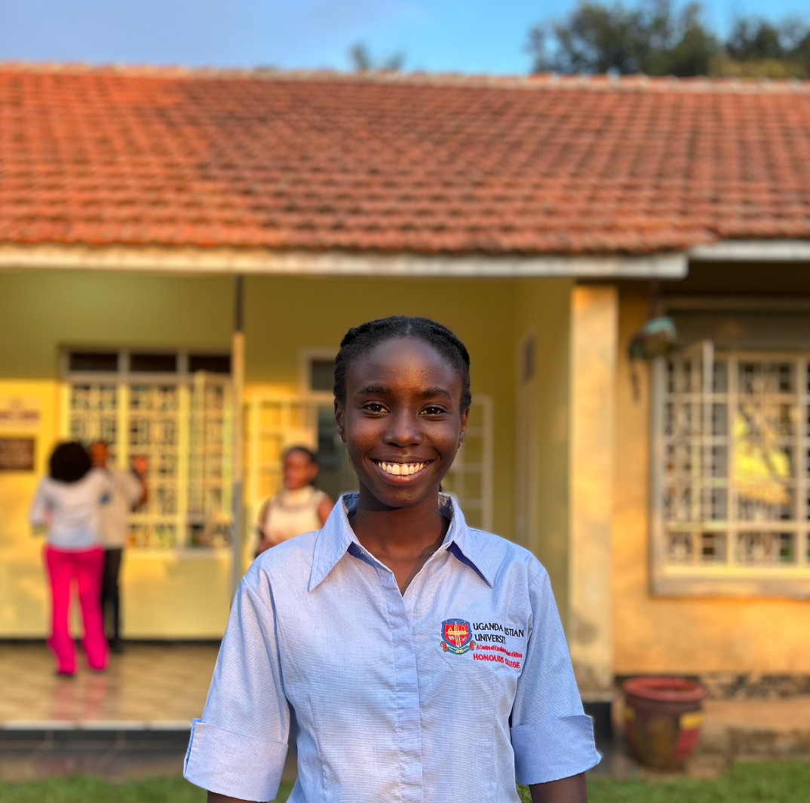

printf("Minister of ICT, Honours College");
Not one person doing everything. A team that can.
Hi everyone, I'm Rebekah Mugenyi, and this is how I'd approach the role.
Explore the manifestoFive priorities. Pick one.
A strong digital presence
- The goal
- A consistent online presence that reflects who we are, what we do and the excellence we strive for.
- In practice
- An official Honours College website, developed and maintained as one central platform for our identity, activities, announcements, events, achievements and opportunities.
- Why it matters
- Members and visitors get one place to learn about the College.
Reliable ICT support for College activities
- The goal
- Fewer last-minute technical problems, and events that run smoothly and professionally.
- In practice
- Presentations coordinated. Microphones, speakers, projectors and other equipment prepared and tested before events/activities. The online team coordinated. Clear procedures for setup, troubleshooting and handovers.
- Why it matters
- Speakers and audiences can focus on the event instead of the equipment.
Empowering members through ICT
- The goal
- ICT should not depend on one person. The aim is not simply to do the ICT work, but to build a team that can do it well.
- In practice
- Practical demonstrations, shared documentation and hands-on involvement, so interested members can take ownership of presentation management, audio-visual support, livestream coordination, website updates and other digital tools.
- Why it matters
- More members contribute their skills, and the work doesn't stop when one person is unavailable.
Systems that last beyond one term
- The goal
- Work that does not end with my term in office.
- In practice
- Shared resources maintained, simple technical checklists created, recurring tasks documented, and clear responsibilities set for the ICT team.
- Why it matters
- The next team starts from what we built, not from zero.
Technology that serves our community
- The goal
- Better communication, accessibility and collaboration within Honours College.
- In practice
- Better organisation of digital resources, easier access to important information, and improved coordination among members and leadership. I will listen to the needs of the College first.
- Why it matters
- Solutions that are useful, sustainable and achievable.
What "ready" could look like
An illustrative prototype of an event-readiness checklist, not a live system. Tick the items.
0 of 6 checks done
What if the tech person is away?
An illustrative concept with made-up roles. Tap a team member to send them away, then switch documentation on.
Everyone is here. Tap a member to send them away.
How the priorities support each other
Select a priority to see what it connects to.
Everything here feeds the others. Start with any one.
My commitment
I commit to being proactive, organised, willing to learn and accountable as Minister of ICT, working with College leadership and members to identify needs, implement practical solutions and build a culture where technology is a shared responsibility.
I may not have every solution at the beginning, but I am committed to finding them, learning what is necessary and building systems that work.
From depending on individual effort to building reliable systems. From having technical problems to preparing for them. From simply using technology to empowering others through it.
Rebekah Mugenyi
Candidate for Minister of ICT, Honours College